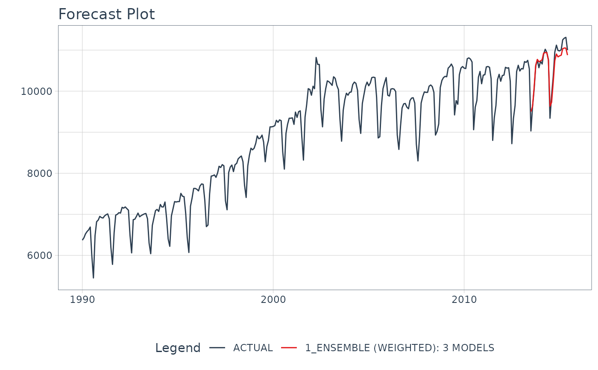

Makes an ensemble by applying loadings to weight sub-model predictions
Details
The input to an ensemble_weighted() model is always a Modeltime Table,
which contains the models that you will ensemble.
Weighting Method
The weighted method uses uses loadings by applying a
loading x model prediction for each submodel.
Examples
# \donttest{
library(tidymodels)
library(modeltime)
library(modeltime.ensemble)
library(dplyr)
library(timetk)
# Make an ensemble from a Modeltime Table
ensemble_fit <- m750_models %>%
ensemble_weighted(
loadings = c(3, 3, 1),
scale_loadings = TRUE
)
ensemble_fit
#> ── Modeltime Ensemble ───────────────────────────────────────────
#> Ensemble of 3 Models (WEIGHTED)
#>
#> # Modeltime Table
#> # A tibble: 3 × 4
#> .model_id .model .model_desc .loadings
#> <int> <list> <chr> <dbl>
#> 1 1 <workflow> ARIMA(0,1,1)(0,1,1)[12] 0.429
#> 2 2 <workflow> PROPHET 0.429
#> 3 3 <workflow> GLMNET 0.143
# Forecast with the Ensemble
modeltime_table(
ensemble_fit
) %>%
modeltime_forecast(
new_data = testing(m750_splits),
actual_data = m750
) %>%
plot_modeltime_forecast(
.interactive = FALSE,
.conf_interval_show = FALSE
)
#> Warning: There were 2 warnings in `dplyr::mutate()`.
#> The first warning was:
#> ℹ In argument: `.nested.col = purrr::map2(...)`.
#> Caused by warning:
#> ! There was 1 warning in `dplyr::mutate()`.
#> ℹ In argument: `.nested.col = purrr::map2(...)`.
#> Caused by warning:
#> ! `keep_original_cols` was added to `step_dummy()` after this recipe was created.
#> ℹ Regenerate your recipe to avoid this warning.
#> ℹ Run `dplyr::last_dplyr_warnings()` to see the 1 remaining warning.

# }